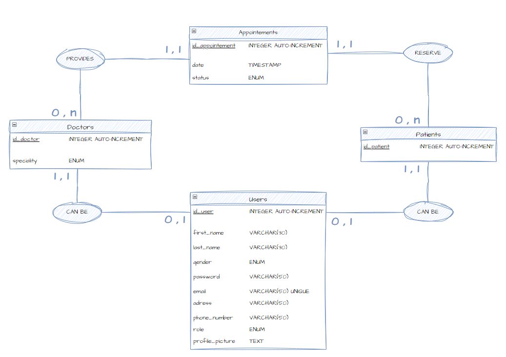
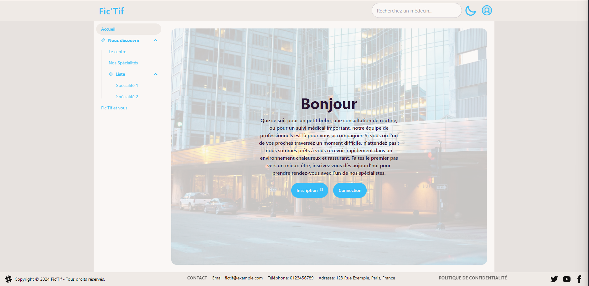
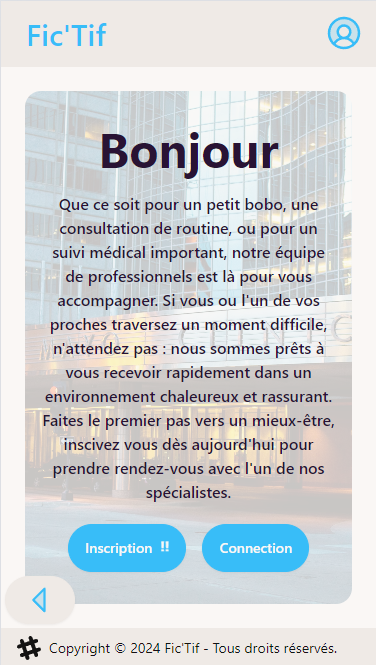

FicTif
Centre médical
Par Nicolas BERNARD
Parcours
DEUST IOSI - Mont Houy Valenciennes
Reconvertion professionnelle
La formation Sofip
Objectifs:
- Dépoussiérer mes connaissances
- Apprendre les nouvelles méthodes
- Adopter les bonnes pratiques
Présentation du projet
Thème
Application web de prise de rendez-vous médical
Services devant être délivrés
- Prise de rendez-vous
- Consulter la liste des rendez-vous
- Gestion de compte utilisateur
Besoins fonctionnels
Exemple de besoins fonctionnels pour les patients :
Je dois être capable, si je suis connecté, d’atteindre la page de rendez-vous POUR prendre rendez-vous avec un médecin
Je dois être capable, sur la page de rendez-vous, de sélectionner un créneau horaire POUR réserver ce créneau pour mon rendez-vous
Conception
Maquettage & Wireframes
Index

Prise de Rendez-vous

Page Profil

Environnement de développement
Utilisation de Git

MCD
Système de gestion de base de données
Base de données non relationnelle orientée documents
Création du backend
Structure de service backend

Routes
router.post( "/register/doctor", validate(RegisterDoctorSchema),authController.registerDoctor );
router.post("/login",validate(LoginUserSchema),authController.login);
Middlewares
const authenticateUser = (req, _res, next) => {
const token = req.signedCookies.accessToken || null;
if (!token) {
throw new UnauthenticatedError("Pas de token fournit");
}
try {
const decodedToken = jwt.verify(token, process.env.JWT_SECRET);
const { id, email } = decodedToken;
req.user = { id, email };
next();
} catch (error) {
throw new UnauthenticatedError("Accès non autorisé");
}
};
Controllers
const login = async (req, res) => {
const user = await usersService.get({ email: req.body.email });
if (!user) {
throw new UnauthenticatedError("Identifiants invalides.");
}
const id = user._id;
const email = user.email;
const isPasswordCorrect = await user.comparePasswords(req.body.password);
if (!isPasswordCorrect) {
throw new UnauthenticatedError("Identifiants invalides.");
}
const token = jwt.sign({ id, email }, process.env.JWT_SECRET, {
expiresIn: process.env.JWT_LIFETIME,
});
const oneDay = 24 * 60 * 60 * 1000;
res.cookie("accessToken", token, {
HttpOnly: true,
secure: process.env.NODE_ENV === "production",
signed: true,
expires: new Date(Date.now() + oneDay),
});
res.status(StatusCodes.OK).json({ user: { userId: id } });
};
Services
import User from "./users.model.js";
const get = (email) => {
return User.findOne(email);
};
Sécurité
- Hachage du mot de passe
- Helmet
- Json Web Token
- Express Rate Limit
- MongoSanitize
Création du Frontend
Router
path: "/",
element: <SharedLayout />,
children: [
{
index: true,
element: <Home />,
errorElement: <div>Error</div>,
},
{
path: "appointment/:id?",
element: <Appointment />,
errorElement: <div>Error</div>,
action: appointmentAction,
},
Router
<main className="relative flex min-h-dvh flex-col items-center bg-base-300">
<AuthProvider>
<ThemeContext.Provider value={{ theme, toggleTheme }}>
<RouterProvider router={router} />
</ThemeContext.Provider>
</AuthProvider>
</main>
Layout
<>
<Navbar />
<SideMenuDrawer>
{isPageLoading ? <Loading /> : <Outlet />}
</SideMenuDrawer>
<Footer />
</>
Visuel du site
Visuel du site format mobile
Tailwind et Breakpoint
<div className="drawer relative flex-1 bg-base-100 lg:drawer-open xl:max-w-screen-xl">
Prise de Rendez-vous
Spécialisations des médecins
const getAllSpecialities = async () => {
try {
const { data } = await apiClient.get("/api/v1/doctors/specialities");
setSpecialities(data.specialities);
} catch (error) {
const errorMessage =
error.response?.data?.msg ||
"Erreur lors de la récupération des types de consultation";
toast.error(errorMessage);
}
};
Médecins par spécialité
const getDoctorsBySpeciality = async (speciality) => {
try {
const { data } = await apiClient.post("/api/v1/doctors/bySpeciality", {
speciality,
});
return data.doctors;
} catch (error) {
const errorMessage =
error.response?.data?.msg ||
"Erreur lors de la récupération des médecins";
toast.error(errorMessage);
}
};
Modale de confirmation
const handleEventClick = async (event) => {
const updatedValues = {
doctor: appointmentValues.doctor,
reservedDate: event.start,
patient: user._id,
};
setAppointmentValues(updatedValues);
if (modalRef.current) {
modalRef.current.showModal();
}
try {
const { data } = await apiClient.post("/api/v1/doctors/options", {
_id: updatedValues.doctor,
});
setCurrentDoctor(data.doctors);
} catch (error) {
console.log(error);
}
};
Action de prise de Rendez-vous
export const action = async ({ request }) => {
const formData = await request.formData();
const doctor = formData.get("doctor");
const reservedDate = formData.get("reservedDate");
const patient = formData.get("patient");
if (!doctor || !reservedDate) {
throw new Error("Docteur ou date de rendez-vous non sélectionné.");
}
try {
const { data } = await apiClient.post("/api/v1/appointments", {
date: reservedDate,
doctorId: doctor,
patientId: patient,
});
toast.success(data.msg);
return redirect("/");
} catch (error) {
const errorMessage =
error.response?.data?.msg || "Erreur lors de la prise de rendez-vous";
toast.error(errorMessage);
return null;
}
};
Autres réalisations
- Système d'authentification
- Theme Toggler
- Recherche de médecin
- Génération d'avatar
Démonstration
Axes d'amélioration
- Second portail (Admins/Médecins)
- Modifications des rendez-vous
- Envoi d'email (Enregistrement/Rendez-vous)
- Modification de mot de passe requiert l'ancien
- Fil d'ariane
- Gestion plus complète des horaires
- Gestion des avatars personnalisés
- Génération des créneaux plus dynamique
- Auto refresh token
Conclusion
Bilan
Remerciements
A vos questions !